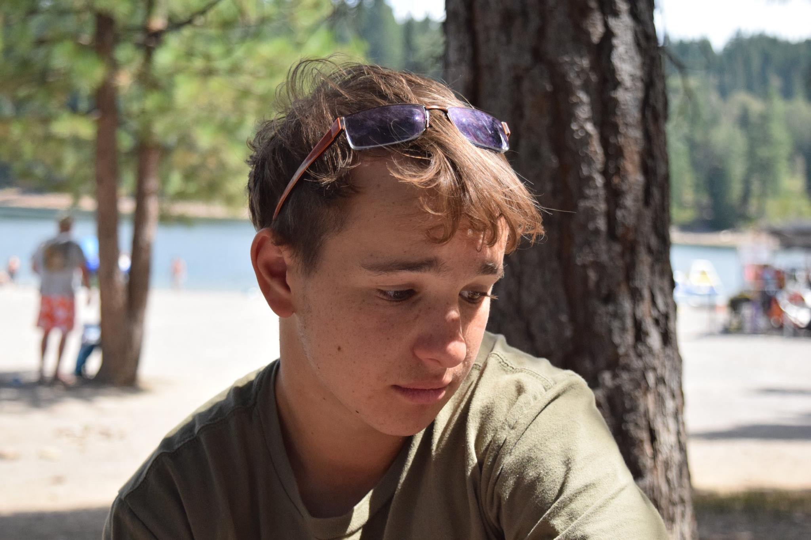

My Name is Emile Givental. This website is a work in progress, but I hope you can find some basics about me here in the meantime.
After recently completing my M.S.E. in Computer Science at The University of Pennsylvania, and my Double Major in Computer and Computer Science from
Haverford and Bryn Mawr before that, I am looking for work as a software engineer and/or data scientist. I am focusing my search for in person position
in the San Francisco Bay Area, but am open to considering other locations.
As an undergraduate student, I opted to spend my summers doing research in machine learning instead of pursuing internships. At the time, I was more
interested in the theoretical side of computer science and was strongly considering pursuing a PhD.
Once I decided to pursue Software Engineering nearing the completion of my time at Haverford, I did not find a internship for the summer of 2020 due to Covid. While internship experience alluded me, I prioritized taking project oriented courses all throughout my time at Haverford and The University of Pennsylvania. I am also a quick learner, hard worker, and clear communicator, which led to me always completing my solo and group projects no matter the exigency.
Personally, I love watching sports (baseball and soccer mostly), finding the best happy hours, and am trying to learn how to cook -- read recipes without screwing them up.
Also, feel free to contact me with the info on my contact page.
